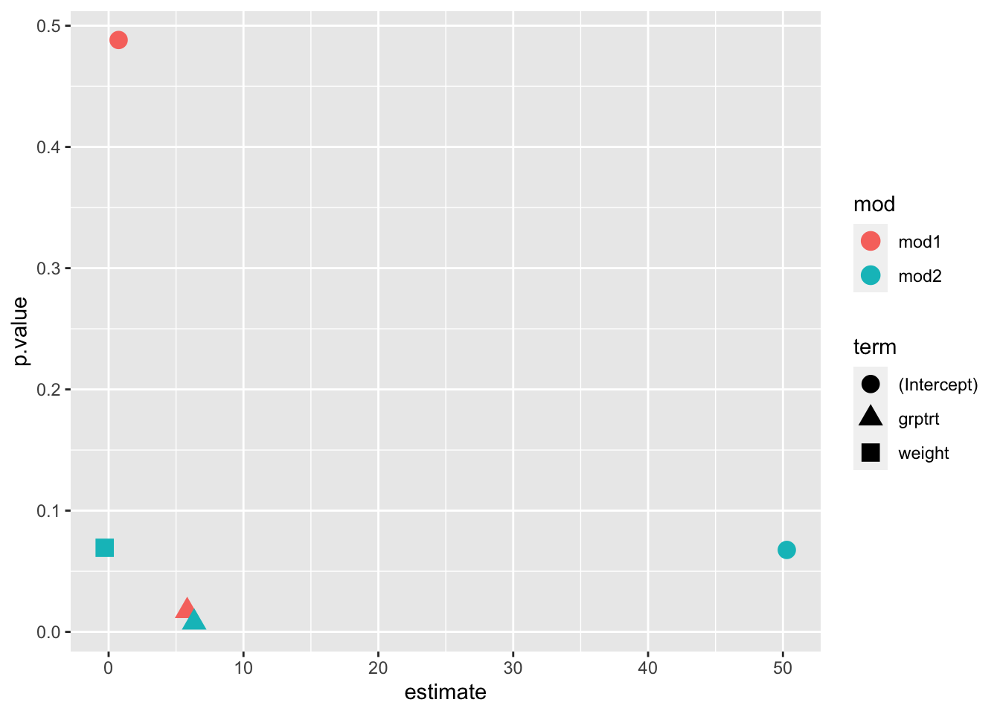

set.seed(123)
id <- paste0("id", seq(1:6))
dob <-
sample(seq(as.Date('1999/01/01'),
as.Date('2000/01/01'),
by="day"), 6)
dod <-
sample(seq(as.Date('2016/01/01'),
as.Date('2017/01/01'),
by="day"), 6)
weight <-
rnorm(n = 6, mean = 170, sd = 5)
demo <-
tibble(id, dob, dod, weight) |>
# id6 lost to follow-up
head(5)R for Medical Research 6
Basic Modeling
Overview
Today we will explore the basics of modeling with a toy dataset and show how to compare multiple models in a nice format.
Load Data
Demographics
We will use this toy dataset.
# A tibble: 5 × 4
id dob dod weight
<chr> <date> <date> <dbl>
1 id1 1999-06-28 2016-08-16 167.
2 id2 1999-01-14 2016-08-31 168.
3 id3 1999-07-14 2016-01-14 176.
4 id4 1999-11-02 2016-06-01 172.
5 id5 1999-04-28 2016-03-30 172.Trial data
And this toy dataset.
id2 <- rep(id, times = 2)
grp <- rep(c("trt", "crl"),
times = 6)
vst <- rep(c("vst1", "vst2"),
each = 6)
res <- c(rnorm(3, 10, 1),
rnorm(3, 10, 1),
rnorm(3, 12, 1),
rnorm(3, 17, 1))
trial <- tibble(id2, vst, grp) |>
arrange(vst, grp) |>
mutate(res = res) |>
arrange(vst, id2)
trial[12, 4] <- NA# A tibble: 12 × 4
id2 vst grp res
<chr> <chr> <chr> <dbl>
1 id1 vst1 trt 8.03
2 id2 vst1 crl 9.44
3 id3 vst1 trt 10.7
4 id4 vst1 crl 11.8
5 id5 vst1 trt 9.53
6 id6 vst1 crl 10.5
7 id1 vst2 trt 16.3
8 id2 vst2 crl 10.9
9 id3 vst2 trt 16.4
10 id4 vst2 crl 11.8
11 id5 vst2 trt 15.3
12 id6 vst2 crl NA Notice
res <- c(rnorm(3, 10, 1),
rnorm(3, 10, 1),
rnorm(3, 12, 1),
rnorm(3, 17, 1))# A tibble: 12 × 4
id2 vst grp res
<chr> <chr> <chr> <dbl>
1 id1 vst1 trt 8.03
2 id2 vst1 crl 9.44
3 id3 vst1 trt 10.7
4 id4 vst1 crl 11.8
5 id5 vst1 trt 9.53
6 id6 vst1 crl 10.5
7 id1 vst2 trt 16.3
8 id2 vst2 crl 10.9
9 id3 vst2 trt 16.4
10 id4 vst2 crl 11.8
11 id5 vst2 trt 15.3
12 id6 vst2 crl NA Since this is a toy dataset, we know the data generating process. All subjects start at visit one with a test result drawn from \(N(10, 1)\) distribution. The control subjects then have a followup visit from \(N(12, 1)\), while the treatment subjects are from \(N(17, 1)\). One control subject was lost to followup.
First Model
Reshape
A simple way to handle this data is to just model the difference between visit 1 and visit 2. To do that, we need to pivot. Notice I name the difference res_diff.
trial_wide <-
trial |>
pivot_wider(names_from = vst, values_from = res) |>
mutate(res_diff = vst2 - vst1)
trial_wide# A tibble: 6 × 5
id2 grp vst1 vst2 res_diff
<chr> <chr> <dbl> <dbl> <dbl>
1 id1 trt 8.03 16.3 8.24
2 id2 crl 9.44 10.9 1.49
3 id3 trt 10.7 16.4 5.67
4 id4 crl 11.8 11.8 -0.00489
5 id5 trt 9.53 15.3 5.79
6 id6 crl 10.5 NA NA First model 1
Here is the basic syntax for a linear model. We can save the model to a variable.
We use a “formula syntax” to write our model down. res_diff ~ grp says, predict the mean of the pre-post difference as a function of the group.
mod1 <- lm(res_diff ~ grp, data = trial_wide)
mod1
Call:
lm(formula = res_diff ~ grp, data = trial_wide)
Coefficients:
(Intercept) grptrt
0.7416 5.8242 First model 2
Notice that in this short summary, the lm() function appends the effect class trt (as opposed to the reference class crl) to the exposure variable, grp, so we get grptrt. The coefficient is 5.82. This estimate is close to the “difference of difference” we expect. The difference between
\((N_{vst2,trt}(17, 1) - N_{vst1,trt}(10, 1))\) and
\((N_{vst2,crl}(12, 1) - N_{vst1,crl}(10, 1))\) equals
\(N(5, 4)\)
mod1 <- lm(res_diff ~ grp, data = trial_wide)
mod1
Call:
lm(formula = res_diff ~ grp, data = trial_wide)
Coefficients:
(Intercept) grptrt
0.7416 5.8242 Model Object
The model object bundles several pieces of our model. Many of these have “accessor” functions, or you can just use the $ to access them.
mod1 |> names() [1] "coefficients" "residuals" "effects" "rank"
[5] "fitted.values" "assign" "qr" "df.residual"
[9] "na.action" "contrasts" "xlevels" "call"
[13] "terms" "model" mod1 |> coef()(Intercept) grptrt
0.7415647 5.8242449 mod1$coefficients(Intercept) grptrt
0.7415647 5.8242449 Summary 1
The most common way to inspect the model is to use the summary() function. Note the output is too large.
mod1 |> summary()
Call:
lm(formula = res_diff ~ grp, data = trial_wide)
Residuals:
1 2 3 4 5
1.6719 0.7465 -0.8922 -0.7465 -0.7797
Coefficients:
Estimate Std. Error t value Pr(>|t|)
(Intercept) 0.7416 0.9411 0.788 0.4882
grptrt 5.8242 1.2149 4.794 0.0173 *
---
Signif. codes: 0 '***' 0.001 '**' 0.01 '*' 0.05 '.' 0.1 ' ' 1
Residual standard error: 1.331 on 3 degrees of freedom
(1 observation deleted due to missingness)
Multiple R-squared: 0.8845, Adjusted R-squared: 0.846
F-statistic: 22.98 on 1 and 3 DF, p-value: 0.01727Summary 2
This raises the related issue that in research we often we want to compare many models at once. Maybe we want to see which of many blood labs has the strongest effect on mortality. Or maybe we want to see which model explains the most variation across many subgroups or units.
Out of the box, R isn’t too great at “workflow” like this. But some great packages make it easy.
Model measures
Measures
There are two basic classes of measures associated with a model:
- effect estimates
- fit metrics
Extract
Each of these can be extracted in a convenient tibble form from the model object with the {broom} package and the functions tidy() and glance(). Why bother? Because we can treat our model measures like data measures and group measures together from multiple models and see how they compare.
library(broom)
tidy(mod1)# A tibble: 2 × 5
term estimate std.error statistic p.value
<chr> <dbl> <dbl> <dbl> <dbl>
1 (Intercept) 0.742 0.941 0.788 0.488
2 grptrt 5.82 1.21 4.79 0.0173glance(mod1)# A tibble: 1 × 12
r.squared adj.r.squared sigma statistic p.value df logLik AIC BIC
<dbl> <dbl> <dbl> <dbl> <dbl> <dbl> <dbl> <dbl> <dbl>
1 0.885 0.846 1.33 23.0 0.0173 1 -7.25 20.5 19.3
# ℹ 3 more variables: deviance <dbl>, df.residual <int>, nobs <int>Model, Round 2
Join on more information
Let’s make a second model. This time we will grab some covariates from the demo object. Notice that one id is missing information.
trial_joint <-
trial_wide |>
left_join(demo, by = c("id2" = "id")) |>
mutate(age = (dod - dob)/lubridate::dyears(1))
trial_joint# A tibble: 6 × 9
id2 grp vst1 vst2 res_diff dob dod weight age
<chr> <chr> <dbl> <dbl> <dbl> <date> <date> <dbl> <dbl>
1 id1 trt 8.03 16.3 8.24 1999-06-28 2016-08-16 167. 17.1
2 id2 crl 9.44 10.9 1.49 1999-01-14 2016-08-31 168. 17.6
3 id3 trt 10.7 16.4 5.67 1999-07-14 2016-01-14 176. 16.5
4 id4 crl 11.8 11.8 -0.00489 1999-11-02 2016-06-01 172. 16.6
5 id5 trt 9.53 15.3 5.79 1999-04-28 2016-03-30 172. 16.9
6 id6 crl 10.5 NA NA NA NA NA NA Second model
mod2 is the same, except we are using augmented data, and we are adding the weight covariate from the demo data. The formula syntax is meant to resemble the mathematical formula.
mod2 <- lm(res_diff ~ grp + weight, data = trial_joint)
mod2
Call:
lm(formula = res_diff ~ grp + weight, data = trial_joint)
Coefficients:
(Intercept) grptrt weight
50.2858 6.3431 -0.2918 Digression: other models
Interactions
The : in a formula is for interactions; the * in a formula is for crossing. Notice these two are equivalent
lm(res_diff ~ grp + weight + age + weight:age, data = trial_joint)
Call:
lm(formula = res_diff ~ grp + weight + age + weight:age, data = trial_joint)
Coefficients:
(Intercept) grptrt weight age weight:age
-1386.3409 6.3931 8.2159 86.0096 -0.5095 lm(res_diff ~ grp + weight*age, data = trial_joint)
Call:
lm(formula = res_diff ~ grp + weight * age, data = trial_joint)
Coefficients:
(Intercept) grptrt weight age weight:age
-1386.3409 6.3931 8.2159 86.0096 -0.5095 Powers
The ^x crosses something with itself x many times. For a single continuous variable, this is equivalent to polynomial regression.
lm(res_diff ~ grp + weight^2, data = trial_joint)
Call:
lm(formula = res_diff ~ grp + weight^2, data = trial_joint)
Coefficients:
(Intercept) grptrt weight
50.2858 6.3431 -0.2918 lm(res_diff ~ grp + weight + weight^2, data = trial_joint)
Call:
lm(formula = res_diff ~ grp + weight + weight^2, data = trial_joint)
Coefficients:
(Intercept) grptrt weight
50.2858 6.3431 -0.2918 Removing
Finally, the - in a formula removes that term.
lm(res_diff ~ grp + weight*age - weight:age, data = trial_joint)
Call:
lm(formula = res_diff ~ grp + weight * age - weight:age, data = trial_joint)
Coefficients:
(Intercept) grptrt weight age
46.846 6.352 -0.282 0.104 Comparison to Stata
| Stata | R |
|---|---|
| y x1 x2 | y ~ x1 + x2 |
| y x1,nocons | y ~ 0 + x1 |
| y c.x1#c.x2 | y ~ x1:x2 |
| y c.x1##c.x2 | y ~ x1*x2 |
Model Comparison
Comparison
Now that we have two models, we can keep everything is organized in a tibble, and we can readily make comparisons.
mod1_coef <- tidy(mod1) |> mutate(mod = "mod1")
mod2_coef <- tidy(mod2) |> mutate(mod = "mod2")
coefs <- bind_rows(mod1_coef, mod2_coef) |> relocate(mod)
coefs# A tibble: 5 × 6
mod term estimate std.error statistic p.value
<chr> <chr> <dbl> <dbl> <dbl> <dbl>
1 mod1 (Intercept) 0.742 0.941 0.788 0.488
2 mod1 grptrt 5.82 1.21 4.79 0.0173
3 mod2 (Intercept) 50.3 13.8 3.65 0.0676
4 mod2 grptrt 6.34 0.563 11.3 0.00779
5 mod2 weight -0.292 0.0811 -3.60 0.0694 coefs |> filter(term == "grptrt")# A tibble: 2 × 6
mod term estimate std.error statistic p.value
<chr> <chr> <dbl> <dbl> <dbl> <dbl>
1 mod1 grptrt 5.82 1.21 4.79 0.0173
2 mod2 grptrt 6.34 0.563 11.3 0.00779Comparison 2
Likewise for metrics
mod1_met <- glance(mod1) |> mutate(mod = "mod1")
mod2_met <- glance(mod2) |> mutate(mod = "mod2")
mets <- bind_rows(mod1_met, mod2_met) |> relocate(mod)
mets# A tibble: 2 × 13
mod r.squared adj.r.squared sigma statistic p.value df logLik AIC BIC
<chr> <dbl> <dbl> <dbl> <dbl> <dbl> <dbl> <dbl> <dbl> <dbl>
1 mod1 0.885 0.846 1.33 23.0 0.0173 1 -7.25 20.5 19.3
2 mod2 0.985 0.969 0.596 63.7 0.0155 2 -2.22 12.4 10.9
# ℹ 3 more variables: deviance <dbl>, df.residual <int>, nobs <int>mets |> select(mod, r.squared, p.value, df)# A tibble: 2 × 4
mod r.squared p.value df
<chr> <dbl> <dbl> <dbl>
1 mod1 0.885 0.0173 1
2 mod2 0.985 0.0155 2Better style
Creating intermediate variables like mod1_met and mod2_met make clutter and is usually bad form. A better, more advanced approach is to apply a function on each object in a list. Then we can bind together all the results. More on this later.
list("mod1" = mod1,
"mod2" = mod2) |>
map(tidy) |>
list_rbind(names_to = "mod")# A tibble: 5 × 6
mod term estimate std.error statistic p.value
<chr> <chr> <dbl> <dbl> <dbl> <dbl>
1 mod1 (Intercept) 0.742 0.941 0.788 0.488
2 mod1 grptrt 5.82 1.21 4.79 0.0173
3 mod2 (Intercept) 50.3 13.8 3.65 0.0676
4 mod2 grptrt 6.34 0.563 11.3 0.00779
5 mod2 weight -0.292 0.0811 -3.60 0.0694 Presentation 1
From here, it is very easy to display our models in a variety of formats.
mets |>
select(mod, r.squared, p.value, df) |>
knitr::kable(digits = 3, "html")| mod | r.squared | p.value | df |
|---|---|---|---|
| mod1 | 0.885 | 0.017 | 1 |
| mod2 | 0.985 | 0.015 | 2 |
Presentation 2
From here, it is very easy to display our models in a variety of formats.
coefs |>
ggplot(aes(x = estimate, y = p.value, color = mod, shape = term)) +
geom_point(size = 4) 